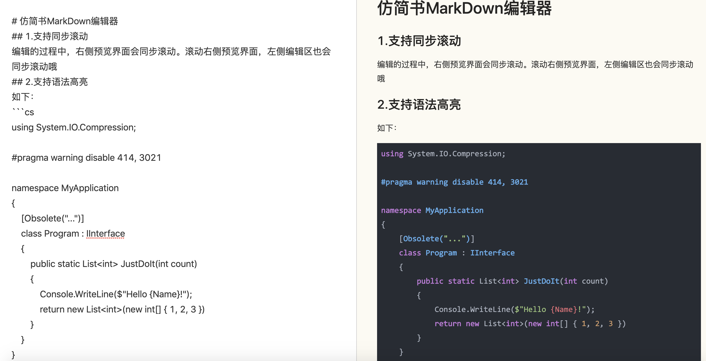

模仿简书的MarkDown编辑器，使用Angular8写的示例
编辑的过程中，右侧预览界面会同步滚动。滚动右侧预览界面，左侧编辑区也会同步滚动哦
如下：
using System.IO.Compression;
#pragma warning disable 414, 3021
namespace MyApplication
{
[Obsolete("...")]
class Program : IInterface
{
public static List<int> JustDoIt(int count)
{
Console.WriteLine($"Hello {Name}!");
return new List<int>(new int[] { 1, 2, 3 })
}
}
}
执行以下命令观看本demo
npm i
npm start
